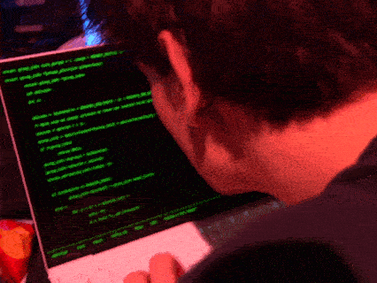

codeArt

This is a collection of some interactive (JavaScript) projects I've made. Enjoy their playful,
just-above-mundane nature.
Jun. 2022. A minecraft-style isometric world builder. Click and place blocks of your choice. Use F to
fill the
current layer and Space to rotate the camera.
Jun. 2023. A CFG (context free grammar) sentence generator that really won't listen to your prompts. May
accidentally impart wisdom.
Jun. 2023. You're just a cow in the world.
May. 2025. A Two Player Game! Spam Q or P to win.
May. 2025. Another Two Player Game... Fight across your keyboard to type words from your set (Desktop only).
May. 2023. Turns your webcam into ascii text. There's audio too - the brighter the image, the higher the
frequency.
Dec. 2023. Chatbot that listens a bit better, with an engaging interface. Based on ELIZA (1966).
May. 2025. A simpler, stripped back, web-based version of a part in Reflections on Identity---an interactive art installation I made for my dissertation.
May. 2023. Unwind with this wind-chime-like soundboard (C pentatonic). Squares get greener the more you
play but some will darken again!
July. 2023. Go back to the way things were.
Jun. 2023. Generates a busywork task you can complete in 5 minutes to 45 minutes, along with artwork
provided by the Art Institute of Chigaco API. Eccentric text to speech included :D
July. 2023. Get centered. A silly little game where you try and click the center point between two
squares.
Jan. 2022. Fully complete tetris clone.